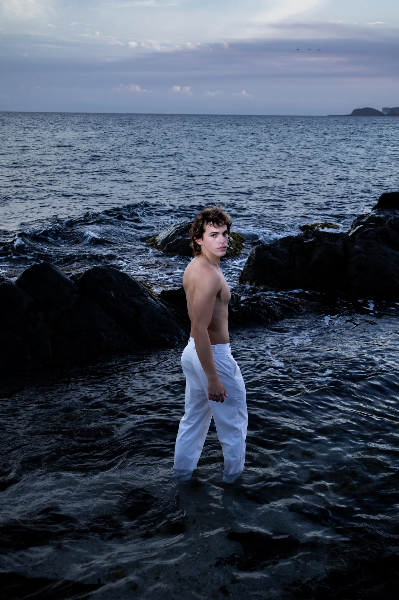
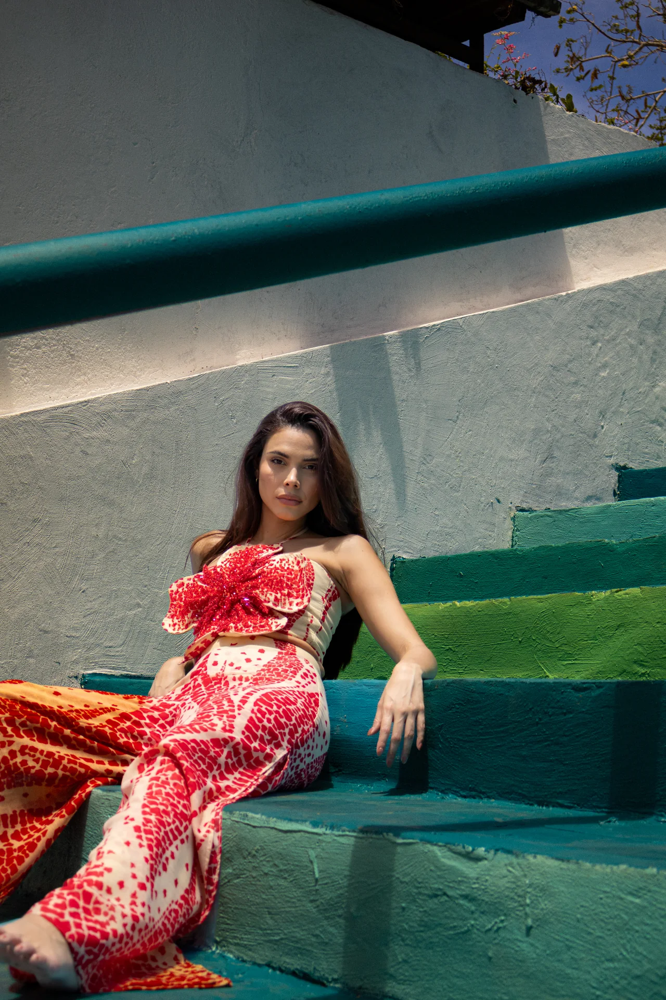
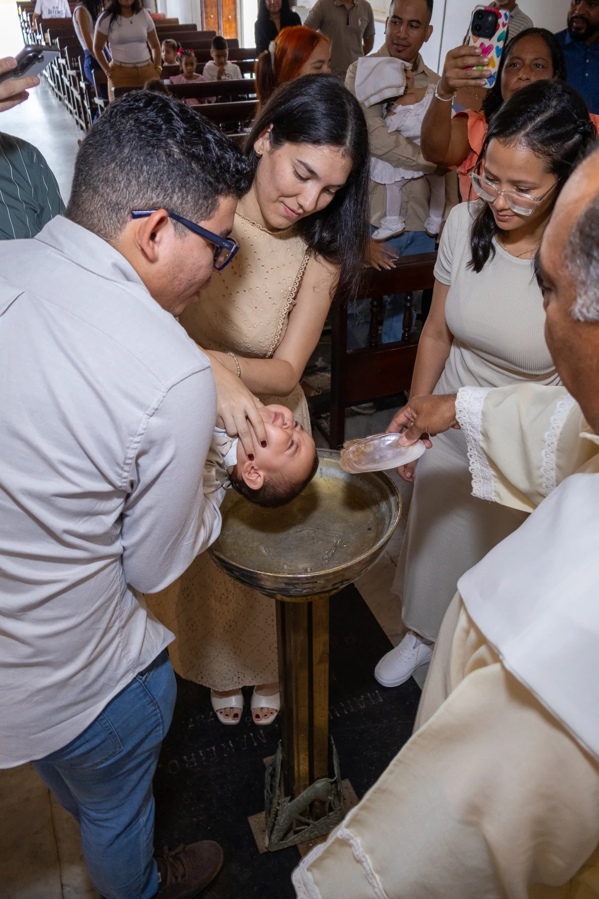
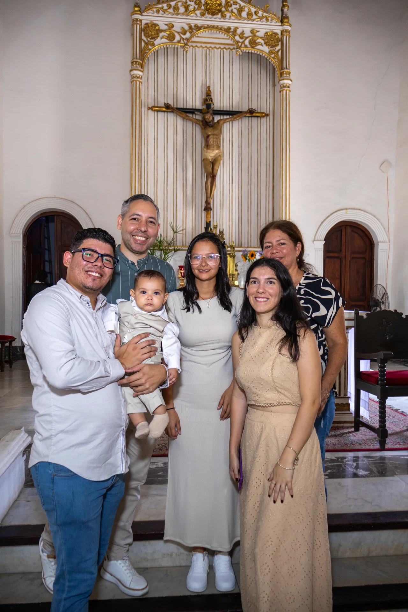

FOTOGRAFÍA
Capturando luz, momentos y estética visual con enfoque editorial.
Sesiones
Reflejo de Sal
Sesión Editorial
Sesiones • B&W
Horizonte y Roca
Blanco y Negro Analógico
Sesiones
Brisa Costera
Golden Hour Natural

Sesiones
Composición y Mirada
Retrato Exterior

Sesiones
Luz de Atardecer
Iluminación Cálida
Sesiones
Estética Editorial
Moda & Lookbook
Sesiones
Retrato en Movimiento
Estilo Editorial

Sesiones
Detalles y Textura
Enfoque Artístico
Sesiones
Sesión Madelein
Retrato Íntimo
Bautizos
El Altar
Ceremonia Religiosa

Bautizos
Momento del Sacramento
Celebración Familiar

Bautizos
Detalles de Ceremonia
Luz Ambiental
Bautizos
Sonrisas y Celebración
Recepción de Evento
Bautizos
La Familia Unida
Recuerdo Inolvidable

XV Años
Sesión Previa XV
Exteriores & Vestido

XV Años
Corona y Brillo
Detalle y Elegancia

XV Años
Noche de Gala XV
Fiesta & Celebración

XV Años
Emoción y Celebración
Recuerdos para Siempre